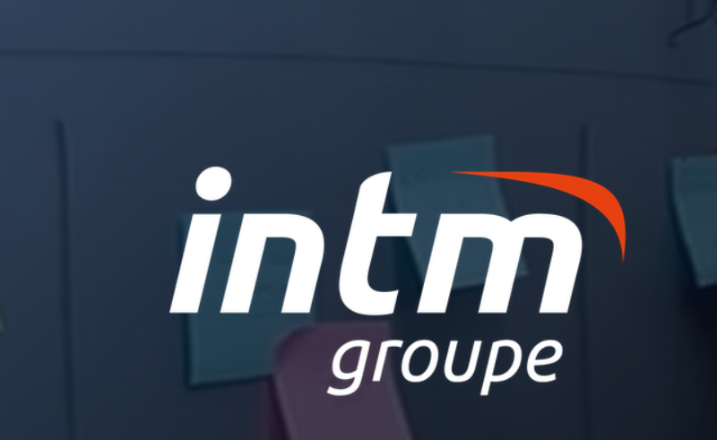
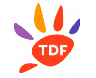

Formation Scolaire
BTS Services Informatiques aux Organisations (SIO)
Option SISR : Solutions d'infrastructure, systèmes et réseaux
2024 - 2026
Baccalauréat Professionnel Systèmes Numériques (SN)
Option RISC : Réseaux Informatiques et Systèmes Communicants
Mention Bien
2021 - 2024
Expériences Professionnelles
Technicien Systèmes & Réseaux – Entreprise INTM (2024 - 2025)
-

- Gestion du parc informatique : Inventaire complet et suivi rigoureux des actifs matériels.
- Migration Système : Pilotage du passage de Windows 10 vers Windows 11 (postes de formation et consultants).
- Support Utilisateurs : Installation de logiciels métiers, déploiement de pilotes et résolution d'incidents (N1/N2).
- Gestion Identités : Création, modification et maintenance des comptes utilisateurs au sein de l'infrastructure.
- Infrastructure Réseau : Installation et brassage de switches, paramétrage de bornes GSM 4G pour la connectivité distante.
- Maintenance : Entretien préventif et curatif des postes de travail et équipements réseaux.
Administrateur réseau junior – Entreprise TDF (2024)
-

- Veille Technologique : Étude approfondie sur les nouveaux équipements réseaux et l'intégration de l'IA dans l'administration.
- Déploiement Matériel : Installation physique et configuration logique d'équipements réseaux critiques.
- Automatisation : Développement de scripts Python pour l'automatisation de tâches d'administration récurrentes.
- Data Processing : Utilisation de Regex (Expressions régulières) pour le traitement, le filtrage et l'analyse de flux de données.
Situations Professionnelles & Compétences
Recensement et suivi du parc informatique
Contexte : Parc Windows 10 dédié aux utilisateurs INTM et aux sessions de formation.
Problème / Besoin : Nécessité d'un suivi précis pour la planification des cycles de mise à jour et des migrations matérielles.
Mon action : Réalisation d'un inventaire via Intune couplé à un recensement manuel sur site pour identifier chaque utilisateur et équipement.
Résultat : Constitution d'une base de données fiable permettant une gestion proactive et une planification sans interruption de service.
Compétences : Gestion de parc, Intune, Inventaire matériel.
Migration massive Windows 10 vers Windows 11
Contexte : Postes critiques pour consultants et salles de formation.
Problème / Besoin : Obsolescence logicielle et impératifs de sécurité exigeant le passage à Windows 11.
Mon action : Audit de compatibilité matérielle, gestion du calendrier de déploiement, migration sur site/distance et résolution des blocages SSD via mise à jour des drivers BIOS.
Résultat : 100% du parc compatible migré avec succès, suppression des vulnérabilités liées aux anciens OS.
Réseau et infrastructure physique
Contexte : Cœur de réseau et baie informatique de l'entreprise.
Problème / Besoin : Optimisation de la connectivité et renforcement de la sécurité physique et logique.
Mon action : Opérations de brassage en baie, configuration de switches, déploiement de bornes GSM 4G de secours et tests de connectivité end-to-end.
Résultat : Infrastructure stabilisée, redondance accrue et sécurisation des flux réseaux.
Automatisation et scripts Python
Contexte : Analyse de données de parc et gestion de logs.
Problème / Besoin : Tâches d'extraction de données répétitives et chronophages pour l'équipe technique.
Mon action : Conception et déploiement de scripts Python sur mesure pour l'automatisation des rapports d'inventaire.
Résultat : Réduction significative du temps de traitement et fiabilisation des données extraites.
Benchmark et optimisation d'équipements
Contexte : Comparaison de performances serveurs et postes clients.
Problème / Besoin : Identifier le matériel optimal pour des applications métiers gourmandes en ressources.
Mon action : Protocoles de tests (benchmarks), analyse comparative des composants et rédaction de préconisations d'achat.
Résultat : Optimisation du budget IT et amélioration des performances utilisateurs.